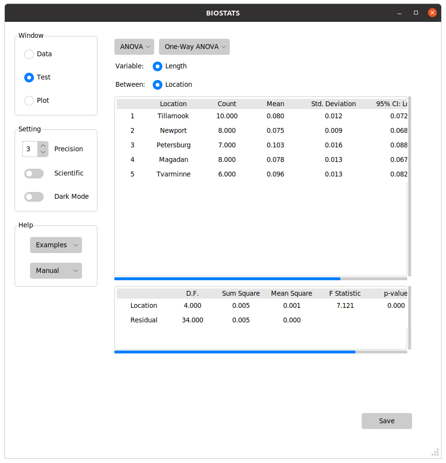

What is BIOSTATS#
BIOSTATS is an intuitive app for statistical analysis.
It is free and open-source.
It works on Windows / Linux.
You can perform tests with a few clicks#
t-Test
{kind=link}
ANOVA
{kind=link}
Chi-Square Test
{kind=link}
Regression
{kind=link}
You can visualize plots with a few clicks#
Histogram
{kind=link}
Box Plot
{kind=link}
Regression Plot
{kind=link}
Multiple Plot
{kind=link}
BIOSTATS includes these tests:#
Basic |
t-Test |
ANOVA |
Exact Test |
Chi-Square Test |
|---|---|---|---|---|
Numeric |
One-Sample t-Test |
One-Way ANOVA |
Binomial Test |
Chi-Square Test |
Numeric (Grouped) |
Two-Sample t-Test |
Two-Way ANOVA |
Fisher’s Exact Test |
Chi-Square Test (Fit) |
Categorical |
Paired t-Test |
One-Way ANCOVA |
McNemar’s Exact Test |
McNemar’s Test |
Contingency |
Pairwise t-Test |
Two-Way ANCOVA |
Mantel-Haenszel Test |
|
Multivariate ANOVA |
||||
Repeated Measures ANOVA |
Linear Regression |
Logistic Regression |
Nonparametric |
Others |
|---|---|---|---|
Correlation |
Simple Logistic Regression |
Sign Test |
Screening Test |
Correlation Matrix |
Multiple Logistic Regression |
Median Test |
Epidemiologic Study |
Simple Linear Regression |
Ordered Logistic Regression |
Wilcoxon Signed-Rank Test |
Factor Analysis |
Multiple Linear Regression |
Multinomial Logistic Regression |
Wilcoxon Rank-Sum Test |
Principal Component Analysis |
Kruskal-Wallis Test |
Linear Discriminant Analysis |
||
Friedman Test |
|||
Spearman’s Rank Correlation |
BIOSTATS includes these plots:#
Distribution |
Categorical |
Relational |
Multiple |
Others |
|---|---|---|---|---|
Histogram |
Count Plot |
Scatter Plot |
Ultimate Plot |
Heatmap |
Density Plot |
Strip Plot |
Line Plot |
Pair Plot |
FA Plot |
Cumulative Plot |
Swarm Plot |
Regression Plot |
Joint Plot |
PCA Plot |
2D Histogram |
Box Plot |
LDA Plot |
||
2D Density Plot |
Boxen Plot |
|||
Violin Plot |
||||
Bar Plot |
Quick Start#
Downloads#
The application can be downloaded from the links below:
Windows : https://github.com/hikarimusic/BIOSTATS/releases/latest/download/BIOSTATS.exe
Linux : https://github.com/hikarimusic/BIOSTATS/releases/latest/download/BIOSTATS
Note
Your computer may warn you not to run BIOSTATS.exe for security concerns. Please ignore it and run it anyway. There is definitely no virus in BIOSTATS because I don’t know how to write a virus :D
Note
It might take about 10 seconds to open the program. Please give BIOSTATS some time!
Note
In Linux, you may need to permit the execution by
chmod +x BIOSTATS before running the program.
Examples#
You can open examples from Help > Examples. Sample datasets will be imported, and all the options will be automatically set.
{kind=link}
Install Package#
For programmers, you can install the package from pip:
pip install biostatistics
The main window can be called directly:
biostats
You can also import biostats and use the functions:
:~$ python3
>>> import biostats as bs
>>> data = bs.dataset("one_way_anova.csv")
>>> summary, result = bs.one_way_anova(data=data, variable="Length", between="Location")
>>> summary
Location Count Mean Std. Deviation 95% CI: Lower 95% CI: Upper
1 Tillamook 10 0.080200 0.011963 0.071642 0.088758
2 Newport 8 0.074800 0.008597 0.067613 0.081987
3 Petersburg 7 0.103443 0.016209 0.088452 0.118434
4 Magadan 8 0.078012 0.012945 0.067190 0.088835
5 Tvarminne 6 0.095700 0.012962 0.082098 0.109302
>>> result
D.F. Sum Square Mean Square F Statistic p-value
Location 4 0.004520 0.001130 7.121019 0.000281 ***
Residual 34 0.005395 0.000159 NaN NaN NaN
More Info#
For more information, check out these pages:
Note
If you have any suggestions or find any bugs, please contact me. We need your help!
Contact me: hikarimusic.tm@gmail.com
If you use BIOSTATS in your research, it’s a good idea to cite the paper of BIOSTATS.
Citation: working
References:
McDonald, J.H. Handbook of Biological Statistics (3rd ed.). Sparky House Publishing, Baltimore, Maryland, 2014.
Mangiafico, S.S. An R Companion for the Handbook of Biological Statistics, version 1.3.2. 2015, rcompanion.org/rcompanion/.
Rosner, Bernard. Fundamentals of biostatistics. Cengage learning, 2015.
Bobbitt, Zach. Statology. 2021, www.statology.org.
UCLA. Statistical Methods and Data Analytics. 2021, stats.oarc.ucla.edu.